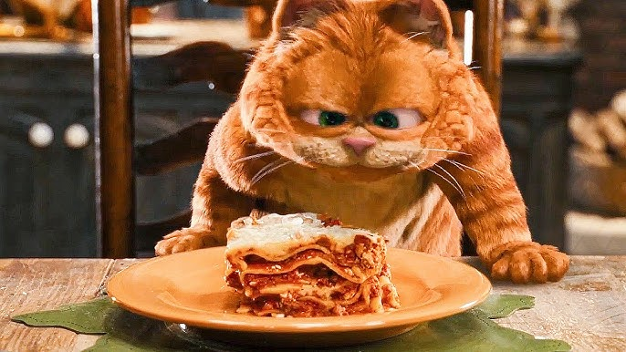

Home
Lasagna

Description:
Lasagna is a dish consisting of layers of wide, flat pasta
(lasagna noodles) with various fillings like meat sauce,
cheese (ricotta, mozzarella, parmesan), vegetables, and
seasonings, all baked together.
Ingredients:
- Sweet Italian Sausage - 1 pound
- Lean Ground Beef - 3/4 pounds
- Onion - Minced; 1/2 cup
- Garlic - Crushed; 2 cloves
- Crushed Tomatoes - 1 (28 ounce) can
- Tomato Sauce - 1 (6.5 ounce) can
- Tomato Paste - 2 (6 ounce) cans
- Water - 1/2 cup
- White Sugar - 2 tablespoons
- Fresh Parsley - 4 tablespoons
- Dried Basil - 1 1/2 teaspoons
- Salt - 1 1/2 teaspoons
- Italian Seasoning - 1 teaspoon
- Fennel Seeds - 1/2 teaspoon
- Ground Black Pepper - 1/4 teaspoon
- Lasagna Noodles - 12
- Ricotta Cheese - 16 ounces
- Egg - 1 large
- Mozzarella Cheese - 3/4 pound
- Parmesan Cheese - 3/4 cup
Steps:
-
In a skillet over medium heat; combine and cook the sausage,
ground beef, onion, and garlic. Cook until well browned.
-
Combine the: crushed tomatoes, tomato sauce, tomato paste,
water, white sugar, 2 tablespoons of the parsley, basil, salt, italian seasoning,
fennel seeds, and black pepper. Simmer, covered, for about
1.5 hours, stirring occasionally.
-
Boil the lasagna noodles in a large pot of largely salted water.
Boil for about 8-10 minutes. Drain noodles.
-
In a bowl, combine the ricotta cheese, egg, remaining parsley,
and salt. Stir until well combined.
-
Preheat the oven to 375 degrees F (190 degrees C).
-
In an empty 9x13 baking dish: lay down 1.5 cup of the meat sauce,
then arrange 6 of the lasagna noodles lengthwise on top of the
meat sauce, then spread half of the ricotta cheese mixture and
top with a third of the mozzarella. Cover this all with 1.5 cups
of the meat sauce and top it off with parmesan cheese.
-
Repeat the layers and top it off with the remaining mozzarella and parmesan cheeses.
-
Cover tightly with aluminum foil.
-
Bake in the oven for 25 minutes.
-
Uncover and bake for an additional 25 minutes.
-
Rest for 15 minutes before serving.